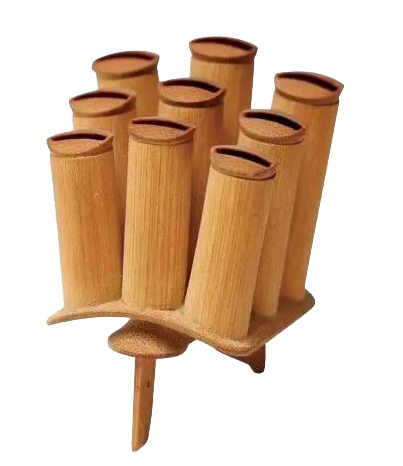
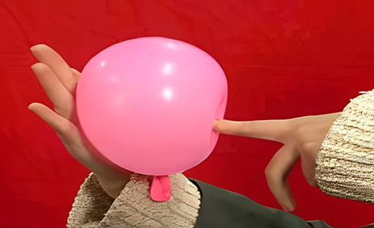
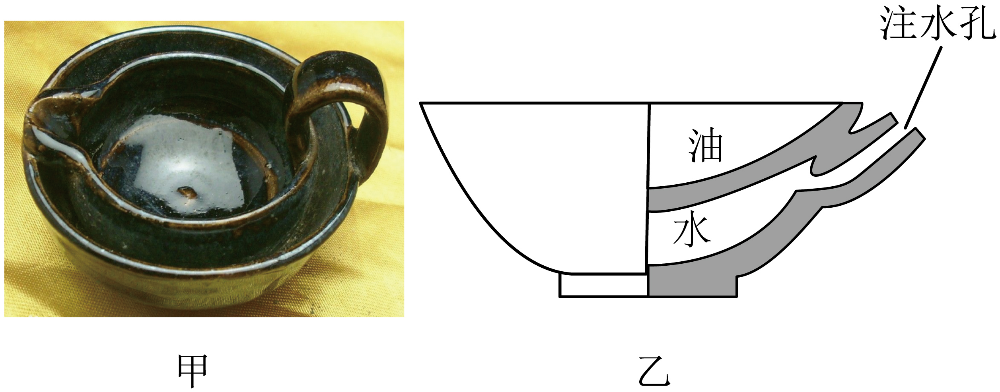
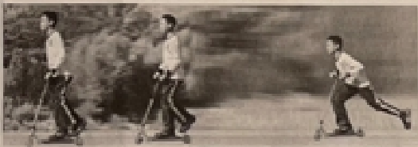

2024年北京市中考物理试题 · 选择题 第6、7、8、9、10题
6. 北京的鸽哨制作精致，图中所示的是用多个管状哨连接成的一个“连筒类”鸽哨。当鸽子携带鸽哨飞行时，哨声既有高音、也有低音，主要是因为各筒的长短会影响发出声音的（ ）

A. 音调B. 音色C. 响度D. 传播速度
7. 如图所示，左手手指和右手手掌分别沿水平方向压在气球的两侧，使气球保持静止。下列说法正确的是（ ）

A. 手指对气球的压力大于手掌对气球的压力
B. 手指对气球的压强大于手掌对气球的压强
C. 手掌对气球的压力与气球对手掌的压力是一对平衡力
D. 手指与手掌受到气球的压力是一对相互作用力
8. 图甲为我国古代的“节能灯”——“省油灯”，图乙为其部分剖面示意图。向灯盏夹层内注水，有助于减慢油的蒸发，达到省油的目的。关于“省油灯”减慢油蒸发的方法，下列说法正确的是（ ）

A. 降低油的温度B. 减小油的表面积
C. 减慢油表面上方的空气流动D. 减少油的体积
9. 下列说法正确 是（ ）
是（ ）
A. 铁块很难被压缩，说明分子间只存 斥力
斥力
B. 燃料完全燃烧时放出的热量越多，其热值越大
C. 汽油机的做功冲程主要是将内能转化为机械能
D. 物体吸收热量，温度一定升高
10. 某同学玩滑板车时的情境如图所示，一开始，人用力蹬地，人和滑板车一起向前运动；停止蹬地后，人和滑板车运动得越来越慢，最终停下来。下列说法正确的是（ ）

A. 人用力蹬地，使滑板车向前运动的过程中，人对滑板车没有做功
B. 人停止蹬地后，人和滑板车还能继续向前运动，是因为他们受到惯性的作用
C. 人停止蹬地后，人和滑板车继续向前运动的过程中，不再受到力的作用
D. 人停止蹬地后，人和滑板车运动得越来越慢的过程中，其运动状态发生改变